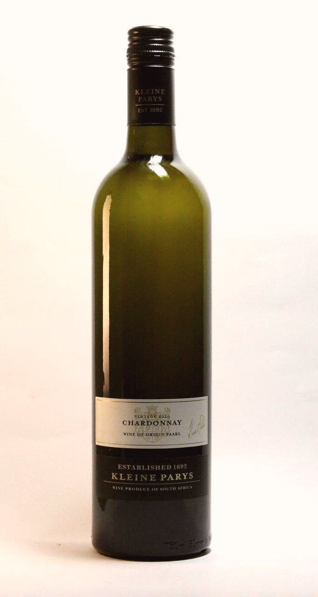
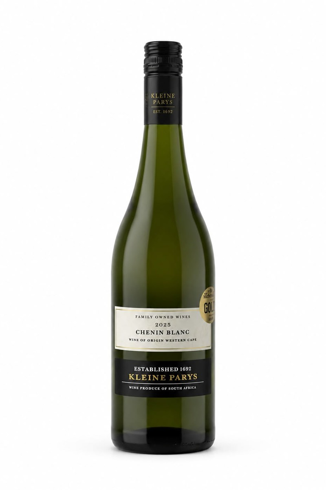
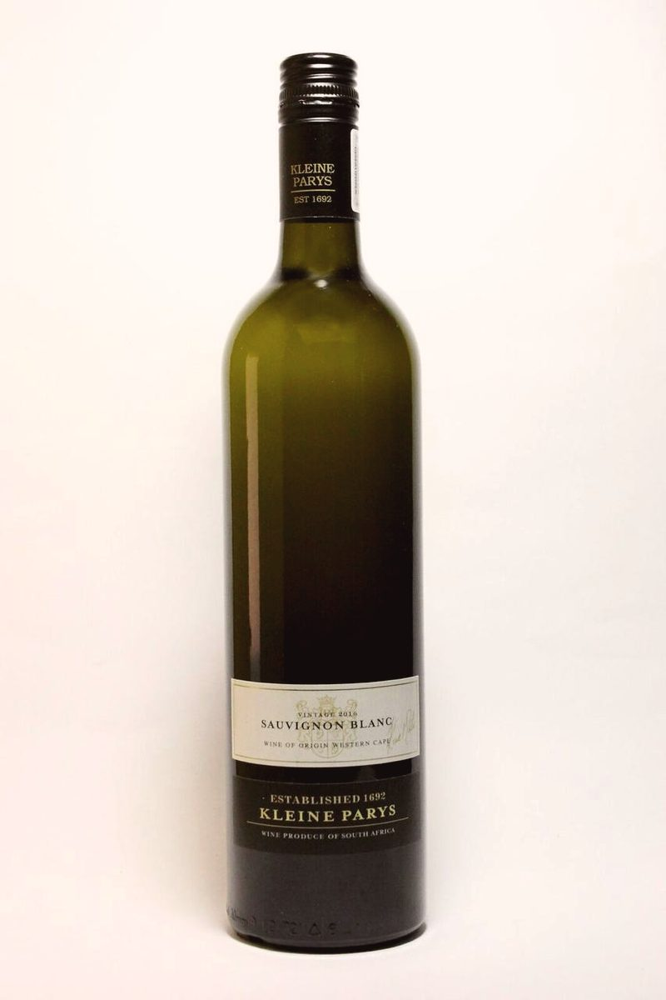
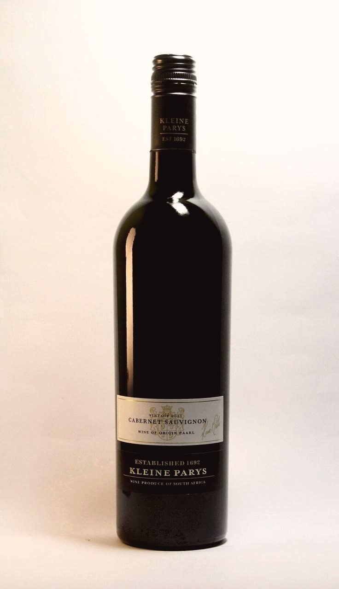
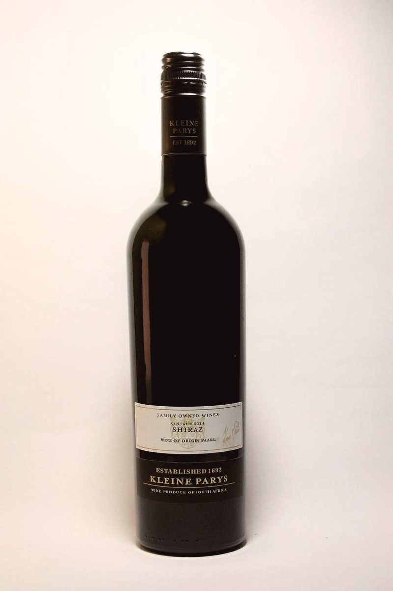
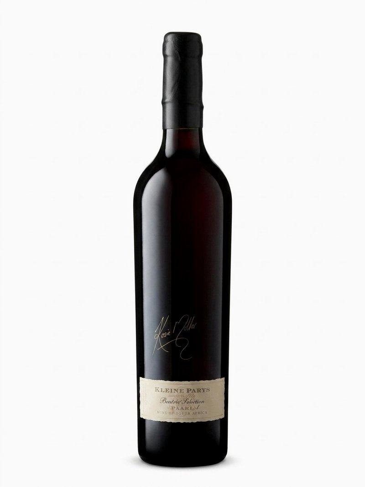
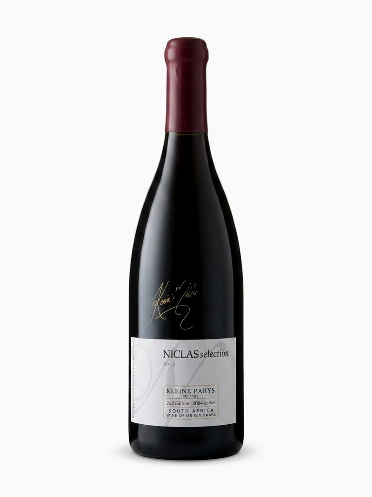
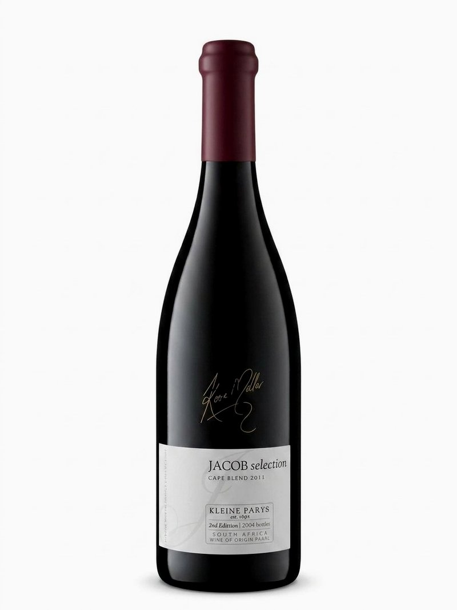

The Cellar
Wines of Distinction
Hand-picked from specially selected vineyards and crafted with the artistry of a lifetime. Our Estate Collection captures the character of this land, while the Family Collection — the Beatrix, Niclas and Jacob Selections — represents the pinnacle of what Klein Parys produces. Named after the Möller family, these are wines made to be remembered.

Estate Range
White Wine
Chardonnay
Butterscotch flavours introduced by citrussy, delicate wine with a soft, pronounced finish. Beautifully balanced with a hint of velvety oak.

Estate Range
White Wine
Chenin Blanc
A lively fresh wine underlined by a greenish tint. Crisp with intense tropical-citrus flavours and a vibrant, fruity palate.

Estate Range
White Wine
Sauvignon Blanc
Fresh and vibrant with crisp citrus and tropical notes. A clean mineral finish reflects the Berg River terroir of the Western Cape.

Estate Range
Red Wine
Cabernet Sauvignon
Rich and full-bodied with dark fruit, cedar and a firm tannic structure. Deep Hutton soils give this wine its characteristic power and age-worthiness.

Estate Range
Red Wine
Merlot
A luscious, full-bodied wine with nutty, spicy nuances. Maturation in French oak barrels contributes to the well-integrated, velvety tannins and a lingering, smooth finish.

Family Collection
Red Wine
Shiraz
Intense red colour with rich, ripe fruity aromas. Gutsy with spice and peppery undertones, backed by firm, smokey tannins.
Family Collection

Family Collection
Red Blend · Merlot / Cabernet Sauvignon / Shiraz
Beatrix Selection
A wine of exceptional depth and character, crafted in limited quantities. This bold Bordeaux-style blend bears Kosie Möller’s signature and is named in honour of the Möller family — a true collector’s bottle.

Family Collection
Red Blend · Syrah / Merlot
Niclas Selection
Brooding and complex, the Niclas Selection rewards patience. A limited edition Syrah-Merlot from the Klein Parys cellar, crafted to stand the test of time. Rich dark fruit with spice and a velvety finish.

Family Collection
Red Blend · Pinotage / Shiraz
Jacob Selection
A bold Cape Blend with Pinotage and Shiraz. The Jacob Selection speaks of the land, the family and the decades that went into its making. Spicy, full-bodied and uniquely South African.